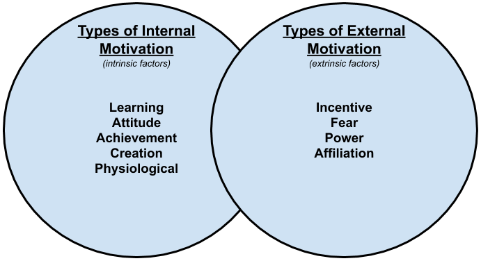

Volgens Auteur Kendra Cherry, expert op het gebied van psychologie, is motivatie het proces dat doelgericht gedrag op touw zet en het doelgerichte gedrag in stand houdt. Voorbeeld hiervoor is het halen van een glas water bij het hebben van dorst. Dagelijks gebruiken we de term motivatie bij het beschrijven van een persoon die iets doet met een bepaalde reden. Makkelijk gezegd is motivatie de drijvende kracht van menselijke acties.
Auteur Evan Tarver vervolgt dit verhaal met zijn onderzoek naar de verschillende soorten motivatie. Uit zijn onderzoek concludeerde hij dat er twee voornaamste categorieën motivatie zijn: intrinsieke en extrinsieke motivatie. Hierna blijven er nog negen andere soorten motivaties over die onderverdeeld kunnen worden in deze twee categorieën. Maar wat zijn deze twee categorieën motivatie dan?
Intrinsieke motivatie vertegenwoordigd al de motivatie gebaseerd op interne beloningen, zoals zelfverbetering en het helpen van andere mensen. Een voorbeeld hiervan is gemotiveerd zijn om promotie te maken omdat je nuttige vaardigheden leert. Intrinsieke motivatie kan ook negatief zijn. Bijvoorbeeld jezelf motiveren om nieuwe vaardigheden te leren omdat je anders jezelf onvervuld voelt.
Extrinsieke motivatie vertegenwoordigd al het de motivatie gebaseerd op externe beloningen, zoals geld of respect. Een voorbeeld hiervan is gemotiveerd zijn om promotie te maken omdat er een verhoging aankomt. Ook extrinsieke waarde kan negatief zijn. Bijvoorbeeld gemotiveerd zijn omdat je anders je baan kan verliezen. Extrinsieke motivatie komt meer voor dan intrinsieke motivatie.
Om dit verhaal af te ronden kijken we nog naar een blog van auteur Natalie Cook. Zij schreef over waarom motivatie belangrijk is in het leven. In haar blog zegt ze dat zonder motivatie we niks kunnen bereiken in het leven, omdat er geen doelen zijn om naar toe te werken. De reden waarom motivatie belangrijk is, is omdat elk persoon op de aardbol uniek is en zijn eigen doel heeft. Om je eigen doel te bereken moet je gemotiveerd zijn om aan je doel te werken, waardoor je uiteindelijke dromen werkelijkheid kunnen worden. Niet alleen voor jezelf, maar ook voor andere.
Dank Pink hield een TED Talk over motivatie. Hier vertelde hij een anekdote over twee groepen die hetzelfde probleem moesten oplossen. Eén groep kreeg een beloning als ze het snelst hadden opgelost en de andere groep moest het alleen zo snel mogelijk oplossen, zonder beloning. Wat iedereen verwachte was dat de groep met beloning sneller was, maar dat bleek niet zo te zijn. Uit dit onderzoek bleek dat beloningen soms creativiteit blokkeert en dat er gekozen wordt voor de makkelijkste oplossing. Ook zegt hij dat beloningen blokkeert de focus en beperkt de mogelijkheden. De conclusie uit dit blijkt dus dat beloningen negatieve impact hebben op de gehele prestatie. Dit onderzoek was een voorbeeld van excentrieke motivatie.
Je bent in redelijke mate intrinsiek gemotiveerd en in redelijke mate extrinsiek gemotiveerd. Dat je redelijk intrinsiek gemotiveerd bent betekent dat je het best leuk vindt om te studeren. Maar héél leuk vind je het nou ook weer niet. Dat je in redelijke mate extrinsiek gemotiveerd bent wil zeggen dat je er ook rekening mee houdt wat je met je studie kunt bereiken: een diploma, geld, status of de erkenning van de mensen waar je van houdt. Op zich is er niks mis met jouw motivatie. Wél zou je gelukkiger zijn als je studie wat beter zou passen bij je werkelijke interesses.
Ik ben het eens met de uitslag van de test tot en met de laatste zin. Het klopt dat ik studeren leuk vind, maar soms heb ik er ook geen zin in. Gelukkig is dit een studie waar ik erg geïntresseerd in ben. Daarom vind ik de laatste zin niet helemaal kloppen. Ik vind juist wel dat deze studie erg bij mij past. Dagelijks zit ik achter mijn computer, te gamen of te programmeren. Dit doe ik allebei voor mijn plezier.
De meeste punten gaf je aan de rol: Sociale contacten (18 punten)
Mensen met deze drijfveer hechten veel waarde aan sociale contacten. Gezelligheid en vriendschap zijn belangrijke redenen voor het hebben van een baan. De scheiding tussen werk en privé geldt voor hun minder strikt. Bij loopbaankeuzes zal men zich dan ook snel laten leiden door de vraag of men wel voldoende collega's ontmoet of heeft. Of het werk bevalt hangt af van de mate waarin men kan samenwerken of onder de mensen is.
Daarna gaf je de meeste punten aan: Rijkdom (15 punten)
Rijkdom als carrièreanker zegt iets over het belang dat iemand hecht aan materiële beloning. Geld verdienen is dan veelal de belangrijkste reden om te werken. Een hoog inkomen en meer verdienen is voor deze personen de drijfveer voor het maken van loopbaankeuzes. Een hoog of hoger inkomen is voor deze persoon een belangrijke graadmeter voor succes.
Het minst aantal punten gaf je voor: Creativiteit (6 punten)
Voor iemand die creativiteit als carrièreanker heeft, is produceren van nieuwe ideeën of producten het voornaamste doel. De drijfveer is vernieuwend bezig zijn. Een werkomgeving die procedureel is en weinig ruimte laat voor eigen initiatief kan als zeer beperkend ervaren worden. Vaak werken creatieve mensen het liefst zelfstandig of in kleine teams.
Sociale contacten zijn voor mij heel belangrijk. Persoonlijk vind ik het erg leuk om nieuwe mensen te ontmoeten. Tevens vind ik het ook erg leuk om met (niewe) mensen samen te werken. Graag voeg ik zoveel mogelijk mensen toe aan mijn contacten lijst!
Rijkdom als de tweede keuze had ik niet verwacht. Tuurlijk vind ik het leuk om wat geld te bezitten, maar ik wil niet meteen het kaartje "rijkdom" eraan vast hangen. Ik vind het ook altijd leuk om naar mijn werk te gaan omdat ik weet dat ik er voor beloont wordt.
Creativiteit had ik niet verwacht op de laatste plaats. Eerlijk gezegd ben ik niet echt creatief. Ik vind het moeilijk om zelf dingen te verzinnen. Fijner vind ik het om iets op te zoeken wat mij inspiratie geeft. Liever heb ik input van andere die helpen met het verzinnen van ideeën.
Mijn conlusie is dat deze opleiding (van wat ik voel) goed bij mij past. Ik zit lekker in mijn vel en ga met plezier naar school. Jammer genoeg blijkt dit niet uit de testen die ik gemaakt heb.